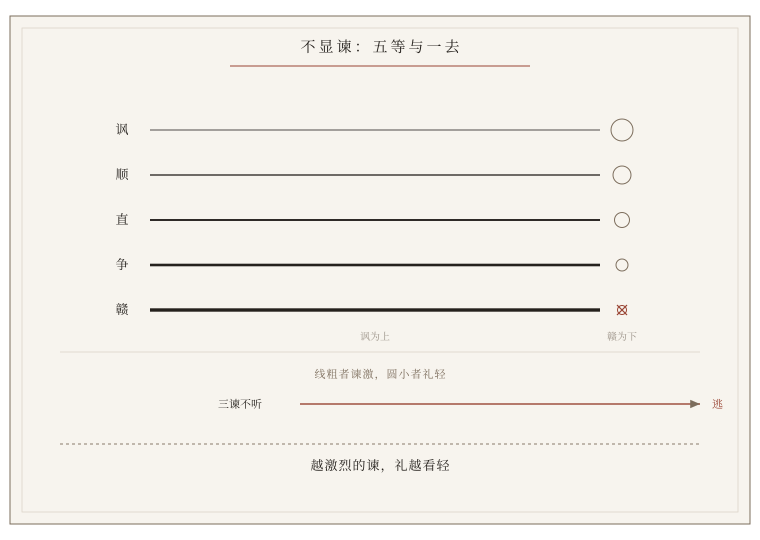

曲礼下 · 二·六十 · 第 183 课
臣之事君，不显谏；三谏而不听，则去之。注「为夺美也。显，明也……三谏不听，则逃之，逃，去也」。
说什么事：谏的五种与去职的界线。
落在哪一层：礼，兼及礼意。论谏之微与去之决。
为何编在此位：上节论史笔之绝，此节论人臣之去。绝与去，一在纸上，一在脚下。
【经】為人臣之禮，不顯諫。三諫而不聽，則逃之。
【注】為奪美也。顯，明也，謂明言其君惡，不幾微。逃，去也。君臣有義則合，無義則離。
【疏】案庄二十四年「曹羁出奔陈」，《公羊传》云：「戎将侵曹，曹羁谏曰：『戎众以无义，君请勿自敌也。』曹伯曰：『不可。』三谏不从，遂去之。」何休云「谏有五」：一曰讽谏，案定十二年《公羊传》云「孔子以季氏之强谓季孙曰：『家不藏甲，邑无百雉之城。』季孙闻之，堕费邑」，是讽谏也；二曰顺谏，曹羁是也；三曰直谏，子家驹是也；四曰争谏，子反请归是也；五曰赣谏，百里子、蹇叔子是也。「凡谏，讽谏为上，赣谏为下」。事君虽主谏争，亦当依微纳进善言耳，不得显然明言君恶以夺君之美也。「三谏不听，则逃之」者，听犹从也，逃犹去也。君臣有离合之义，有义则合，无义则离；若三谏不听，则待放而去也。
显谏 注明言君恶，不几微。与「几谏」相对。
夺美 注「为夺美也」。谏太显，则夺君之美。
三谏 三次而不听，乃去。
逃 注「逃，去也」。非逃亡，是去职。
谏之五 讽、顺、直、争、赣（赣，直言无隐）。
做臣子的礼，不显谏。三次进谏而不听，就离他而去。
此节两句：一句教怎么说话，一句教什么时候走。「不显谏」是留有余地，「三谏则逃」是留有线。一柔一刚，礼把臣的分寸标在了这两点上。
第一层 夺美之义 注三字「为夺美也」。谏而太显，等于当众指出君之恶，君之美被夺。礼以为这不是忠，是失礼。
第二层 谏之五等 讽、顺、直、争、赣。疏「讽谏为上，赣谏为下」。最高的一等是不说破，最低的一等是把话全说出来。此序与常人的直觉相反：越激烈的谏，礼越看轻。
第三层 有义则合 注「君臣有义则合，无义则离」。此语是全部臣礼的底：君臣不是天生的，是义的结合。义尽，则合的条件消失。
第四层 待放而去 疏「三谏不听，则待放而去也」。「待放」二字最要：不是跑，是等君放他。去得也合礼。
与今日何干 在组织里，怎么提意见与什么时候离开，是同一件事的两端。礼给的答案：话要绕着说，走要等着走。
| 左 | 右 |
|---|---|
| 不显谏 | 明言君恶，则夺君之美 |
| 三谏而不听则逃之 | 逃，去也，非逃亡 |
| 君臣有义则合 | 无义则离 |
| 讽谏为上 | 赣谏为下 |
| 依微纳进善言 | 不得显然明言君恶 |
| 待放而去 | 去亦有其礼 |
画五枚由细到粗的横线，自上而下排列，线端各接一个小圆（示「谏」之五等：上最细，下最粗）。最上一道线旁画一道极短的斜引（示「讽」之微）；最下一道线端的小圆被划去（示「赣」为下）。五线之下另画一道向外的箭头，箭头出画面右缘（示「逃之」）。不写文字、不画人。赭色只用在最下一道线及其被划去的小圆。
